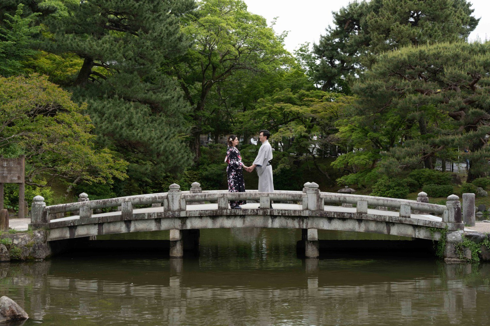

CRIS & VINI · 22—25 ABRIL 2027
Dúvidas frequentes
Tudo o que você precisa saber para aproveitar esses dias com a gente.
ESTAMOS CONTANDO OS DIAS
Uma ajudinha para planejar sua viagem
Reunimos aqui as respostas às dúvidas mais comuns sobre a celebração, a hospedagem e a viagem. Esta página será atualizada conforme os detalhes forem confirmados.
Sua resposta nos ajudará a organizar tudo com carinho junto ao hotel.
A CELEBRAÇÃO
Sobre o casamento
Qual é a data oficial do casamento?
Nosso casamento será no dia 24 de abril de 2027. Estamos muito felizes em compartilhar esse momento com vocês!
Onde será realizado o casamento?
No Hotel Transamerica Comandatuba, na Ilha de Comandatuba, município de Una, no litoral sul da Bahia.
Quais são as datas da programação completa?
Nossa programação será de 22 a 25 de abril de 2027: quatro dias para aproveitar a ilha, descansar e celebrar juntos.
A cerimônia será na praia?
A cerimônia acontecerá no jardim do resort, em um espaço com vista para a praia. Queremos aproveitar toda a beleza natural da ilha!
Qual será o horário da cerimônia?
A previsão é às 16h do dia 24 de abril. O horário ainda será confirmado, então consulte esta página mais perto da data.
Haverá programação nos outros dias?
Sim! Estamos preparando atividades e momentos especiais ao longo dos quatro dias. Mas não se sintam obrigados a participar de tudo: fiquem à vontade para escolher o que mais combina com vocês e aproveitar a estadia no próprio ritmo.
Posso participar apenas do dia do casamento?
Sim! Será muito especial ter vocês conosco, mesmo que seja apenas no dia da celebração. Pedimos que entrem em contato conosco antecipadamente para organizarmos a participação com o hotel.
ESTADIA
Hospedagem e custos
É obrigatório ficar hospedado no resort?
Não. Adoraríamos que vocês aproveitassem a experiência completa conosco, mas a hospedagem no resort é opcional. Se decidirem ficar em outro lugar, avisem Cris e Vini com antecedência para organizarmos sua participação com o hotel.
O que está incluído na diária do resort?
A hospedagem funciona no sistema all-inclusive, com refeições, lanches e bebidas alcoólicas e não alcoólicas incluídos. Isso contempla café da manhã, almoço, jantar, petiscos e opções ao longo do dia, além de bebidas nos pontos de consumo do resort.
Preciso reservar a hospedagem por conta própria?
Sim. As reservas devem ser feitas diretamente pelo site oficial do resort, utilizando o cupom exclusivo fornecido por Cris e Vini. Entre em contato conosco para receber o cupom antes de reservar.
Acessar o site oficial do resort ↗Existe uma tarifa especial para os convidados?
Sim! Conseguimos uma condição especial de hospedagem. Para utilizá-la, solicite o cupom diretamente a Cris e Vini antes de realizar a reserva. O cupom é individual e não será publicado abertamente no site.
Como funciona o sistema all-inclusive?
Durante a estadia, vocês poderão aproveitar as refeições e bebidas incluídas sem pagar individualmente por cada consumo. O resort oferece café da manhã, almoço, jantar, lanches, petiscos, chá da tarde e opções para a madrugada, além de bebidas alcoólicas e não alcoólicas. Algumas experiências, passeios e serviços especiais podem ter custo adicional.
Posso levar acompanhantes ou crianças?
A participação de acompanhantes depende das pessoas indicadas no convite. Se desejarem incluir alguém que não esteja indicado, conversem conosco antes de fazer a reserva. Crianças são bem-vindas! O resort informa que até duas crianças de 0 a 11 anos e 11 meses podem ter hospedagem cortesia no mesmo quarto dos pais, respeitando a capacidade máxima da acomodação.
COMO CHEGAR
Viagem e transporte
Qual é o aeroporto mais próximo?
A ilha conta com o Aeroporto de Comandatuba. Para voos comerciais, o Aeroporto de Ilhéus (IOS) é uma das principais opções para chegar à região. Verifique as rotas e a disponibilidade de voos para as datas da viagem antes de comprar as passagens.
Como chegar ao resort saindo do aeroporto?
O trajeto depende do aeroporto de chegada. Quem desembarcar em Ilhéus precisará organizar o deslocamento terrestre até a região de Una e o acesso à ilha. Recomendamos combinar o transporte com antecedência e confirmar as opções diretamente com o resort.
O resort oferece serviço de transfer?
Sim! O hotel oferece serviço de transfer, e a contratação pode ser feita diretamente com o resort.
Qual é a melhor maneira de chegar ao destino?
Para quem vem de outras cidades ou países, recomendamos pesquisar voos para Ilhéus e organizar o transporte até o resort com antecedência. Também vale verificar voos para o Aeroporto de Comandatuba, caso haja uma opção compatível com sua rota.
Com quanto tempo de antecedência devo organizar minha viagem?
Como será um destination wedding, recomendamos começar a organizar voos e hospedagem o quanto antes. Reservar antecipadamente ajuda a encontrar opções de viagem e acomodação com mais tranquilidade.
Existe estacionamento no resort?
Sim! O resort possui estacionamento para os hóspedes.
O GRANDE DIA
Vestimenta e cerimônia
Qual será o dress code?
Queremos que todos se sintam confortáveis. Será uma celebração elegante e leve, em harmonia com o clima da Bahia e o cenário do jardim com vista para o mar.
Posso usar salto alto na cerimônia?
Como a cerimônia será no jardim, e não diretamente na areia, o salto poderá ser uma opção. Ainda assim, recomendamos considerar o tipo de piso e escolher um calçado confortável.
A cerimônia acontecerá ao ar livre?
Sim! Nossa proposta é celebrar ao ar livre, no jardim do resort, com vista para a praia e a natureza ao redor.
Que tipo de roupa é mais adequada para o clima?
Abril na Bahia costuma ser quente e úmido. Sugerimos roupas leves e confortáveis para aproveitar a ilha. Não se esqueçam de levar roupas de banho e proteção solar.
Há alguma recomendação especial para a cerimônia no fim da tarde?
A cerimônia está prevista para o final da tarde. Recomendamos chegar com antecedência e escolher um look confortável para aproveitar o jardim, a vista para o mar e as fotos.
TODO MUNDO É BEM-VINDO
Crianças e acessibilidade
Crianças são bem-vindas?
Claro! Crianças são muito bem-vindas. O resort oferece opções de refeições infantis, atividades recreativas e estrutura para famílias. A programação pode variar durante a estadia.
O resort possui atividades para crianças?
Sim. O resort divulga atividades recreativas e refeições infantis. Para famílias com bebês, há também uma Cozinha do Bebê disponível 24 horas, equipada para auxiliar durante a estadia.
O local é acessível para pessoas com mobilidade reduzida?
Sim! O resort possui adaptações para pessoas com mobilidade reduzida. Se precisarem de alguma assistência específica, recomendamos entrar em contato diretamente com o hotel antes da viagem.
Posso solicitar atendimento para alguma restrição alimentar?
Sim! O hotel informa que possui estrutura para lidar com restrições alimentares. Sinalize suas necessidades diretamente ao resort com antecedência e, se possível, avise-nos também para acompanharmos a organização.
UM ÚLTIMO DETALHE
Presentes e contato
Vocês terão lista de presentes?
Sua presença já será o nosso maior presente! Sabemos que viajar para celebrar conosco é um gesto muito especial, e somos muito gratos por isso.
Com quem devo entrar em contato se tiver dúvidas?
Podem falar diretamente com Cris e Vini. Ficaremos felizes em ajudar com dúvidas sobre a viagem, hospedagem ou programação.
Até quando preciso confirmar minha participação?
Pedimos, por gentileza, que confirmem sua participação até 31 de dezembro de 2026, para que possamos organizar todos os detalhes com o hotel.
ESTAMOS POR AQUI
Ainda ficou com alguma dúvida?
Fale com a gente. Será um prazer ajudar a preparar sua viagem e receber vocês na Bahia.
WHERE THE SEA MEETS THE SKY, OUR STORY CONTINUES.